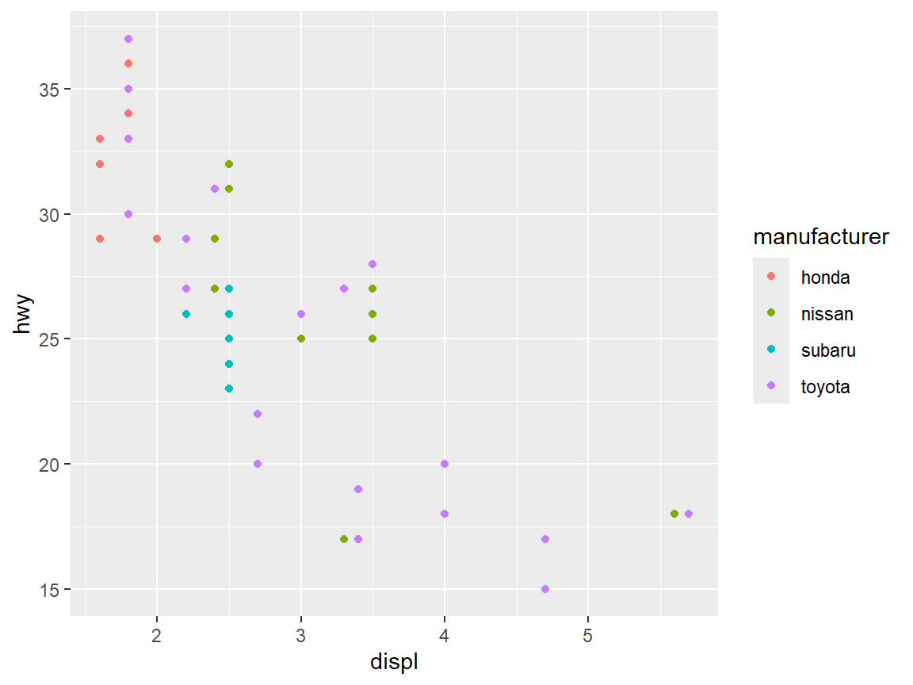
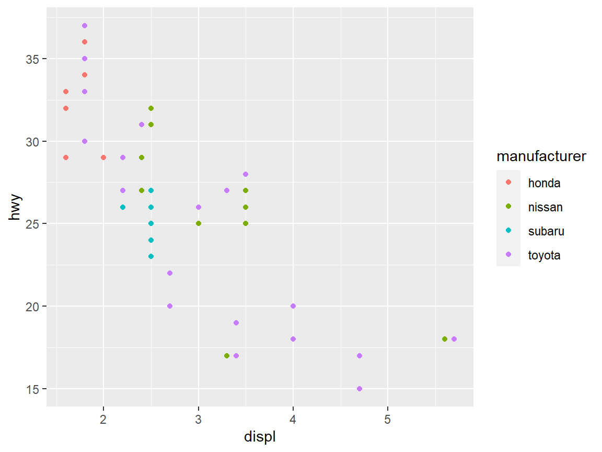
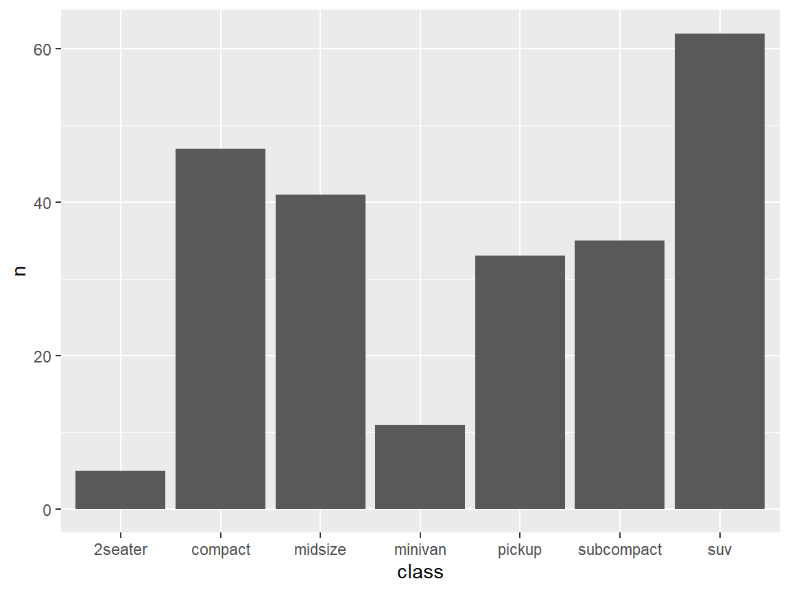
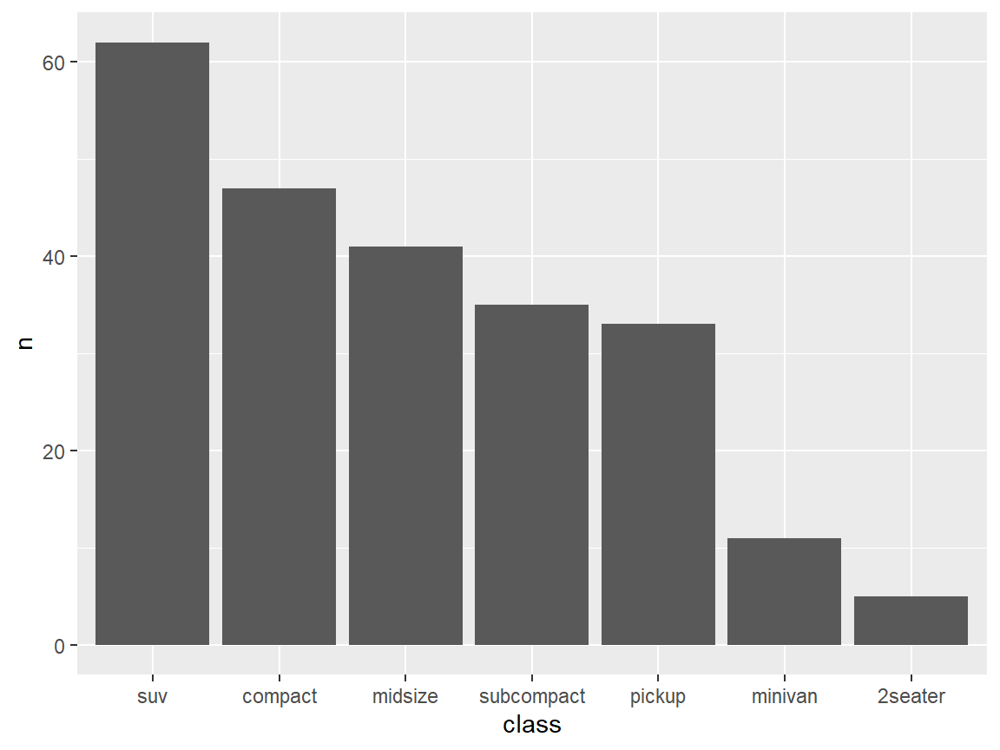
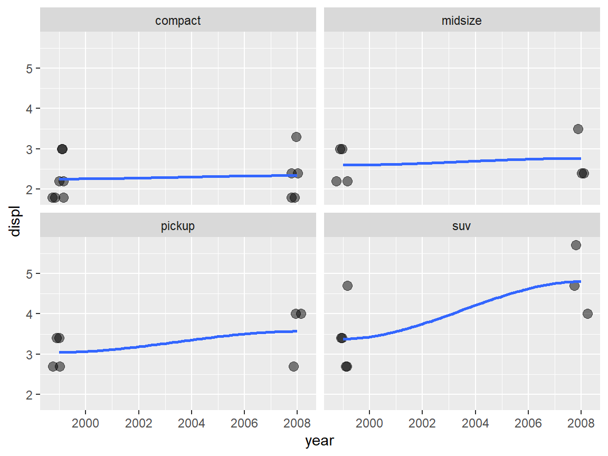
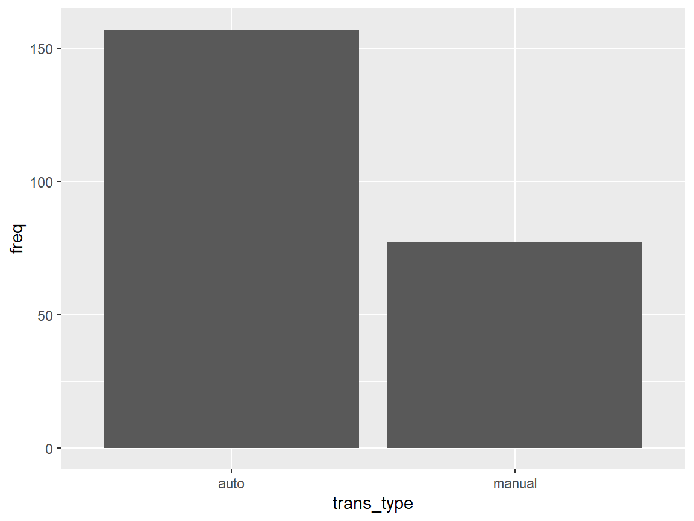
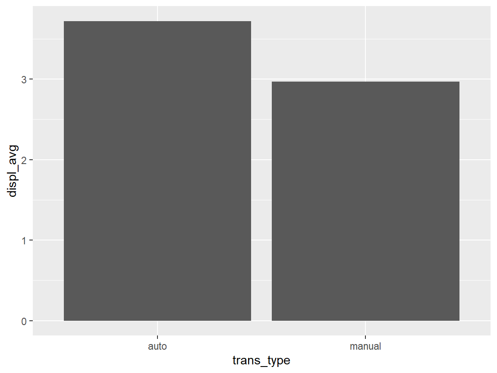

library(tidyverse)
mpg
#> # A tibble: 234 × 11
#> manufacturer model displ year cyl trans drv cty hwy fl class
#> <chr> <chr> <dbl> <int> <int> <chr> <chr> <int> <int> <chr> <chr>
#> 1 audi a4 1.8 1999 4 auto… f 18 29 p comp…
#> 2 audi a4 1.8 1999 4 manu… f 21 29 p comp…
#> 3 audi a4 2 2008 4 manu… f 20 31 p comp…
#> 4 audi a4 2 2008 4 auto… f 21 30 p comp…
#> 5 audi a4 2.8 1999 6 auto… f 16 26 p comp…
#> 6 audi a4 2.8 1999 6 manu… f 18 26 p comp…
#> 7 audi a4 3.1 2008 6 auto… f 18 27 p comp…
#> 8 audi a4 quattro 1.8 1999 4 manu… 4 18 26 p comp…
#> 9 audi a4 quattro 1.8 1999 4 auto… 4 16 25 p comp…
#> 10 audi a4 quattro 2 2008 4 manu… 4 20 28 p comp…
#> # ℹ 224 more rowsData Manipulation with dplyr
dplyr
- Core member in tidyverse
- A package that transforms data
- dplyr implements a grammar for transforming tabular data.
- dplyr cheat sheet https://nyu-cdsc.github.io/learningr/assets/data-transformation.pdf
Commonly used commands in dplyr
- select() – extract variables
- Recommended to always use
dplyr::select()
- Recommended to always use
- filter() – extract cases
- arrange() – reorder cases
- mutate() – create new variables
- n() – number of values/rows
- n_distinct() – number of unique
- group_by() – group cases
- summarize() – summarize variables
- Note: summarise() and summarize() are synonyms.
- Recommended to always use
dplyr::summarize()
- count() – count number of rows in each group
select()
select() – Extract columns (variables) by name
- Select variables var1 and var3 from the data frame
df
select(df, var1, var3)
- Select range of variables var1, var2, var3 from the data frame
df
select(df, var1:var3)
- Select every column but variables var1 and var2 from the data frame
df
select(df, -c(var1, var2))
- Select every column
select(df, everything())
select(df, var7, everything())– Place var7 first, followed by all other variables
Example 1
Let’s use the mpg tibble in ggplot2. Please use help(mpg) for the variable definitions.
Recall: check missing values code chunk – from the previous lecture
mpg %>%
dplyr::select(everything()) %>% # use everything() to select all variables
summarize_all(~sum(is.na(.))) # summarize_all() affects every variable
#> # A tibble: 1 × 11
#> manufacturer model displ year cyl trans drv cty hwy fl class
#> <int> <int> <int> <int> <int> <int> <int> <int> <int> <int> <int>
#> 1 0 0 0 0 0 0 0 0 0 0 0Example 2
List the distinct model names (using the variable model) in the mpg tibble.
mpg %>%
dplyr::select(model) %>%
distinct()
#> # A tibble: 38 × 1
#> model
#> <chr>
#> 1 a4
#> 2 a4 quattro
#> 3 a6 quattro
#> 4 c1500 suburban 2wd
#> 5 corvette
#> 6 k1500 tahoe 4wd
#> 7 malibu
#> 8 caravan 2wd
#> 9 dakota pickup 4wd
#> 10 durango 4wd
#> # ℹ 28 more rows- There are 38 distinct model names!
Example 3
The model variable has too many categories to be useful. Please remove the column model and save the new tibble as mpg1.
mpg1 <- mpg %>%
dplyr::select(-model)
names(mpg1)
#> [1] "manufacturer" "displ" "year" "cyl" "trans"
#> [6] "drv" "cty" "hwy" "fl" "class"filter()
filter() – Extract rows by logical criteria
Extract rows that meet logical criteria from the data frame df
filter(df, logical_criteria)
Logical Tests and Boolean Operators


Example 4
From the mpg1 tibble, create a sub-tibble named DODGE with the manufacture being dodge only.
DODGE <- mpg1 %>%
filter(manufacturer == "dodge")
dim(DODGE)
#> [1] 37 10Example 5
From the mpg1 tibble, create a sub-tibble named DODGE_SUV with the manufacture being dodge and vehicle class being suv.
DODGE_SUV <- mpg1 %>%
filter(manufacturer == "dodge" & class == 'suv')
# Or equivalently,
DODGE_SUV <- mpg1 %>%
filter(manufacturer == "dodge", class == 'suv')
dim(DODGE_SUV)
#> [1] 7 10Example 6
Draw a scatterplot of hwy vs displ (highway mileage vs engine displacement in liters) for the Japanese cars only (the Japanese manufacturers are honda, nissan, subaru, or toyota), colored by manufacturer.
Example 6.1
From the mpg1 tibble, create a sub-tibble named Japanese_car.
Japanese_car <- mpg1 %>% filter(manufacturer %in% c("honda", "nissan", "subaru", "toyota"))
dim(Japanese_car)
#> [1] 70 10Example 6.2
Use the Japanese_car tibble to draw the scatterplot of hwy vs displ. Recall that, geom_point() could be used.
ggplot(Japanese_car, aes(x = displ, y = hwy, col = manufacturer)) +
geom_point()
Combine the Example 6.1 and 6.2
mpg1 %>%
filter(manufacturer %in% c("honda", "nissan", "subaru", "toyota")) %>%
ggplot(aes(x=displ, y=hwy, col= manufacturer)) +
geom_point()
arrange()
arrange() – reorder rows by the value of one or more columns (variables)
arrange()is used to reorder rows of data.- Order will be based on values in a specified column.
- The default order will be ascending order.
- To achieve descending order
desc()will be used withinarrange().
Example 7
In the workshop data (i.e. DS Workshop Participants List.csv), select the variables Name, Department, Major only, sort depend on the Major variable.
Step 1. Import the workshop data in csv into R, using read_csv() command in readr package.
tbl_workshop = read_csv("DS Workshop Participants List.csv")
tbl_workshop
#> # A tibble: 16 × 11
#> Name Gender `Email Address` Department `Info Source` `Class Year` Major
#> <chr> <chr> <chr> <chr> <chr> <chr> <chr>
#> 1 Dwayne Jo… M Djohnson@illin… Statistics Email Undergradua… Stat…
#> 2 Rihanna F Rihanna@illino… Economics Class Graduate ECON
#> 3 Ellen DeG… F Edegeneres@ill… Biology Email Undergradua… Biol…
#> 4 Will Smith M Wsmith@illinoi… Electrica… Email Undergradua… Elec…
#> 5 Angelina … F Ajolie@illinoi… Computer … Class Undergradua… Comp…
#> 6 Cristiano… M Cronaldo@illin… Economics Friends/Coll… Faculty and… <NA>
#> 7 Leonardo … M Ldicaprio@illi… Economics Email Undergradua… Econ…
#> 8 Tom Cruise M Tcruise@illino… Mathemati… Class Undergradua… Math…
#> 9 Robert Do… M RDowneyJr@illi… mechanica… Class Undergradua… Mech…
#> 10 Celine Di… F Cdion@illinois… Biology Friends/Coll… Faculty and… <NA>
#> 11 Adele F Adele@illinois… Statistics Class Undergradua… Stat…
#> 12 Serena Wi… F Swilliams@illi… Computer … Email Undergradua… Comp…
#> 13 Lionel Me… M Lmessi@illinoi… Biology Professor Graduate Biol…
#> 14 Taylor Sw… F Tswift@illinoi… BIology Flyer Undergradua… Biol…
#> 15 J. K. Row… F JKRowling@illi… Finance Email Undergradua… Fina…
#> 16 LeBron Ja… M Ljames@illinoi… Electrica… Flyer Undergradua… EE
#> # ℹ 4 more variables: `Related Courses Taken` <chr>,
#> # `Programming Language Known` <chr>,
#> # `Willingness to be the Presenter` <chr>, `DS Years of Experience` <dbl>Step 2. Select the columns Name, Department, Major only.
Step 3. Sort the tibble by Major.
tbl_workshop %>%
dplyr::select(Name, Department, Major) %>%
arrange(Major)
#> # A tibble: 16 × 3
#> Name Department Major
#> <chr> <chr> <chr>
#> 1 Ellen DeGeneres Biology Biology
#> 2 Lionel Messi Biology Biology
#> 3 Taylor Swift BIology Biology
#> 4 Angelina Jolie Computer Science Computer Science
#> 5 Serena Williams Computer Science Computer Science
#> 6 Rihanna Economics ECON
#> 7 LeBron James Electrical and Computer Engineering EE
#> 8 Leonardo DiCaprio Economics Economics
#> 9 Will Smith Electrical and Computer Engineering Electrical Engineering
#> 10 J. K. Rowling Finance Finance
#> 11 Tom Cruise Mathematics Mathematics
#> 12 Robert Downey Jr. mechanical Science and Engineering Mechanical Engineering
#> 13 Dwayne Johnson Statistics Statistics
#> 14 Adele Statistics Statistics
#> 15 Cristiano Ronaldo Economics <NA>
#> 16 Celine Dion Biology <NA>Note that:
The tibble is sorted by
Majorin alphabetical order, in ascending order.Missing values (i.e.
NA) are always sorted at the end.
Example 7 (continue)
In the workshop data (i.e. DS Workshop Participants List.csv), select the variables Name, Department, Major only, sort depend on the Major variable.
If sort the tibble by Major in descending order is preferred…
tbl_workshop %>%
dplyr::select(Name, Department, Major) %>%
arrange(desc(Major)) ### Use desc() to re-order in descending order
#> # A tibble: 16 × 3
#> Name Department Major
#> <chr> <chr> <chr>
#> 1 Dwayne Johnson Statistics Statistics
#> 2 Adele Statistics Statistics
#> 3 Robert Downey Jr. mechanical Science and Engineering Mechanical Engineering
#> 4 Tom Cruise Mathematics Mathematics
#> 5 J. K. Rowling Finance Finance
#> 6 Will Smith Electrical and Computer Engineering Electrical Engineering
#> 7 Leonardo DiCaprio Economics Economics
#> 8 LeBron James Electrical and Computer Engineering EE
#> 9 Rihanna Economics ECON
#> 10 Angelina Jolie Computer Science Computer Science
#> 11 Serena Williams Computer Science Computer Science
#> 12 Ellen DeGeneres Biology Biology
#> 13 Lionel Messi Biology Biology
#> 14 Taylor Swift BIology Biology
#> 15 Cristiano Ronaldo Economics <NA>
#> 16 Celine Dion Biology <NA>Example 8
From the mpg1 tibble, draw a bar graph of the vehicle classes (variable class) to go in descending order.
Example 8.1
Draw a bar graph of vehicle classes.
ggplot(mpg1, aes(class)) +
geom_bar() Example 8
From the mpg1 tibble, draw a bar graph of the vehicle classes (variable class) to go in descending order.
Example 8.2
Use arrange() to sort the bar graph in descending order.
Step 1. Find the counts for each class type
mpg1 %>% count(class)
#> # A tibble: 7 × 2
#> class n
#> <chr> <int>
#> 1 2seater 5
#> 2 compact 47
#> 3 midsize 41
#> 4 minivan 11
#> 5 pickup 33
#> 6 subcompact 35
#> 7 suv 62Step 2. Use arrange() to sort the counts
mpg1 %>% count(class) %>%
arrange(desc(n)) ## desc() means in descending order
#> # A tibble: 7 × 2
#> class n
#> <chr> <int>
#> 1 suv 62
#> 2 compact 47
#> 3 midsize 41
#> 4 subcompact 35
#> 5 pickup 33
#> 6 minivan 11
#> 7 2seater 5Step 3. Chain the code to ggplot with geom_col()
mpg1 %>% count(class) %>%
arrange(desc(n)) %>%
ggplot(aes(class, n))+
geom_col() 
Q: arrange() has been used. Why still not sorted?
Example 8
Draw a bar graph of the vehicle classes (variable class) to go in descending order.
Example 8.2 (continue)
Q: arrange() has been used. Why the bar graph created is still not sorted?
A: You need to save the order.
Code from the previous slide
mpg1 %>% count(class) %>%
arrange(desc(n)) %>%
ggplot(aes(class, n))+
geom_col() Output after using arrange()
mpg1 %>% count(class) %>%
arrange(desc(n))
#> # A tibble: 7 × 2
#> class n
#> <chr> <int>
#> 1 suv 62
#> 2 compact 47
#> 3 midsize 41
#> 4 subcompact 35
#> 5 pickup 33
#> 6 minivan 11
#> 7 2seater 5Then use fct_inorder() to keep this descending order.
fct_inorder()– Reorder factor levels by the order in which they first appear.
mpg1 %>% count(class) %>%
arrange(desc(n)) %>%
mutate(class = fct_inorder(class))%>% ### save the order
ggplot(aes(class, n))+
geom_col()
Example 9. Sort the data by multiple variables
From the mpg1 tibble, create a tibble that satisfies:
- the manufacture is toyota,
- select variables class, year, displ only,
- sort the tibble depend on class, year, and displ, where class and year are in ascending order, displ is in descending order.
mpg1 %>% filter(manufacturer == "toyota") %>%
dplyr::select(class, year, displ) %>%
arrange(class, year, desc(displ)) %>%
print(n=15) ### Print 15 rows
#> # A tibble: 34 × 3
#> class year displ
#> <chr> <int> <dbl>
#> 1 compact 1999 3
#> 2 compact 1999 3
#> 3 compact 1999 2.2
#> 4 compact 1999 2.2
#> 5 compact 1999 1.8
#> 6 compact 1999 1.8
#> 7 compact 1999 1.8
#> 8 compact 2008 3.3
#> 9 compact 2008 2.4
#> 10 compact 2008 2.4
#> 11 compact 2008 1.8
#> 12 compact 2008 1.8
#> 13 midsize 1999 3
#> 14 midsize 1999 3
#> 15 midsize 1999 2.2
#> # ℹ 19 more rowsFrom the output above, it seems like the displ values increase as the year grow for the compact vehicle type. Is it true for the other vehicle types?
We could create a scatterplot to visualize the change.
mpg %>% filter(manufacturer == "toyota") %>%
dplyr::select(class, year, displ) %>%
ggplot(aes(x = year, y = displ))+
geom_jitter(size = 3, height = 0, width = 0.3, alpha = 0.5)+
geom_smooth(se = FALSE) +
facet_wrap(~class)
–>
mutate()
- Use
mutate()to add new variables and preserves existing ones.
Example 10
Please create a new column combined_mpg in mpg using the formula of
combined_mpg = 0.55 * cty + 0.45 * hwy
mpg %>% mutate(combined_mpg = 0.55*cty + 0.45*hwy) %>%
print(width = Inf) ## use print(width = Inf) to display all the columns
#> # A tibble: 234 × 12
#> manufacturer model displ year cyl trans drv cty hwy fl
#> <chr> <chr> <dbl> <int> <int> <chr> <chr> <int> <int> <chr>
#> 1 audi a4 1.8 1999 4 auto(l5) f 18 29 p
#> 2 audi a4 1.8 1999 4 manual(m5) f 21 29 p
#> 3 audi a4 2 2008 4 manual(m6) f 20 31 p
#> 4 audi a4 2 2008 4 auto(av) f 21 30 p
#> 5 audi a4 2.8 1999 6 auto(l5) f 16 26 p
#> 6 audi a4 2.8 1999 6 manual(m5) f 18 26 p
#> 7 audi a4 3.1 2008 6 auto(av) f 18 27 p
#> 8 audi a4 quattro 1.8 1999 4 manual(m5) 4 18 26 p
#> 9 audi a4 quattro 1.8 1999 4 auto(l5) 4 16 25 p
#> 10 audi a4 quattro 2 2008 4 manual(m6) 4 20 28 p
#> class combined_mpg
#> <chr> <dbl>
#> 1 compact 23.0
#> 2 compact 24.6
#> 3 compact 25.0
#> 4 compact 25.0
#> 5 compact 20.5
#> 6 compact 21.6
#> 7 compact 22.0
#> 8 compact 21.6
#> 9 compact 20.0
#> 10 compact 23.6
#> # ℹ 224 more rowsExample 11
Please compare the frequency and engine displacement average (variable displ) between the two transmissions (auto vs manual).
Example 11.1
Let’s first find the distinct transmission types (with sub types).
Use
distinct()to display the distinct transmission types (with sub types) – variabletrans.Use
n_distinctto find how many transmission types (with sub types).
Example 11
Please compare the frequency and engine displacement average (variable displ) between the two transmissions (auto vs manual).
Example 11.1
Let’s first find the distinct transmission types with sub types.
Use
distinct()to display the distinct transmission types (with sub types) – variabletrans.Use
n_distinctto find how many transmission types (with sub types).
mpg %>%
select(trans) %>%
distinct()
#> # A tibble: 10 × 1
#> trans
#> <chr>
#> 1 auto(l5)
#> 2 manual(m5)
#> 3 manual(m6)
#> 4 auto(av)
#> 5 auto(s6)
#> 6 auto(l4)
#> 7 auto(l3)
#> 8 auto(l6)
#> 9 auto(s5)
#> 10 auto(s4)
### Find just the count of distinct categories
mpg %>%
select(trans) %>%
n_distinct()
#> [1] 10- There are 10 distinct transmission types with sub types.
- But we only need to compare auto and manual transmission types.
Example 11
Please compare the frequency and engine displacement average (variable displ) between the two transmissions (auto vs manual).
Example 11.2
Use mutate() function to create a new variable trans with transmission type only, without sub types.
Example 11
Please compare the frequency and engine displacement average (variable displ) between the two transmissions (auto vs manual).
Example 11.2
Use mutate() function to create a new variable trans_type with transmission type only, without sub types.
mpg_transtype <- mpg %>%
rowwise() %>% ## rowwise() groups the data by row.
mutate(trans_type = str_split(trans, "\\(")[[1]][1]) %>%
ungroup() ## Use ungroup() to drop the rowwise behavior. mpg_transtype %>% distinct(trans_type)
#> # A tibble: 2 × 1
#> trans_type
#> <chr>
#> 1 auto
#> 2 manualDo you have questions about the code above?
Please find the illustration in the next two slides of
str_split(trans, "\\(")[[1]][1]rowwise()
Example 11.2 code – illustration of str_split()
str_split()is from stringr package. The function can be used to split a string into multiple pieces.
str_split(string, pattern)
where
* string is a character vector,
* pattern is the pattern to split on.- In this example,
- you type
\\(to match(, which is the separator.

- Please refer to the stringr cheat sheet for more information.
- you type
str_split("auto(l5)", "\\(")
#> [[1]]
#> [1] "auto" "l5)"We only need “auto” in this example. Therefore,
- Use
[[1]]to get the first element in this list – result in a vector, - Then use
[1]get the first value of the vector.
- Use
str_split("auto(l5)", "\\(")[[1]]
#> [1] "auto" "l5)"
str_split("auto(l5)", "\\(")[[1]][1]
#> [1] "auto"Example 11.2 code – illustration of rowwise()
If rowwise() is not used,
mpg %>%
mutate(trans_type = str_split(trans, "\\(")[[1]][1]) %>%
dplyr::select(trans_type, trans)
#> # A tibble: 234 × 2
#> trans_type trans
#> <chr> <chr>
#> 1 auto auto(l5)
#> 2 auto manual(m5)
#> 3 auto manual(m6)
#> 4 auto auto(av)
#> 5 auto auto(l5)
#> 6 auto manual(m5)
#> 7 auto auto(av)
#> 8 auto manual(m5)
#> 9 auto auto(l5)
#> 10 auto manual(m6)
#> # ℹ 224 more rowsAll are `auto’s in the trans column!
- Therefore, we need to perform the calculation by row to get the values for variable trans.
- After the
mutate()function, useungroup()to drop the rowwise behavior.
group_by(), summarize(), count()
Summarize information by groups
- Find summary statistics by group

Useful function
- Center:
mean(), median() - Spread:
sd(), IQR(), mad() - Range:
min(), max(), quantile() - Position:
first(), last(), nth() - Count:
n(), n_distinct() - Logical:
any(), all()
- Center:
Example 11
Please compare the frequency and engine displacement average (variable displ) between the two transmissions (auto vs manual).
Example 11.3
Use group_by(), summarize() and n() to find the frequency of the two transmission types.
Frequency table
mpg_transtype %>%
group_by(trans_type) %>%
dplyr::summarize(freq = n())
#> # A tibble: 2 × 2
#> trans_type freq
#> <chr> <int>
#> 1 auto 157
#> 2 manual 77
### Or equivalently,
mpg_transtype %>% count(trans_type)
#> # A tibble: 2 × 2
#> trans_type n
#> <chr> <int>
#> 1 auto 157
#> 2 manual 77Bar graph
We could show the counts visually using ggplot.
mpg_transtype %>%
group_by(trans_type) %>%
dplyr::summarize(freq = n()) %>%
ggplot(aes(trans_type, freq)) +
geom_col()
Example 11
Please compare the frequency and engine displacement average (variable displ) between the two transmissions (auto vs manual).
Example 11.4
Use mean() to compare the engine displacement average between the two transmissions (auto, manual).
mpg_transtype %>%
group_by(trans_type) %>%
dplyr::summarize(displ_avg = mean(displ))
#> # A tibble: 2 × 2
#> trans_type displ_avg
#> <chr> <dbl>
#> 1 auto 3.72
#> 2 manual 2.97
### or Visually using ggplot
mpg_transtype %>%
group_by(trans_type) %>%
dplyr::summarize(displ_avg = mean(displ)) %>%
ggplot(aes(trans_type, displ_avg))+
geom_col()
Example 11.5
If you need to
- group by multiple variables, or
- calculate several grouped summary statistics
Please read Example 11.5 on the next slide.
Example 11.5
Get a list of grouped summary statistics (min, Q1, median, Q3, max, mean, std. dev., missing) by transmission type (without sub group) and class type.
displ_summary <- mpg_transtype %>%
group_by(trans_type, class)%>%
dplyr::summarize(
min = min(displ, na.rm = TRUE),
q1 = quantile(displ, 0.25, na.rm = TRUE),
median = quantile(displ, 0.5, na.rm = TRUE),
q3 = quantile(displ, 0.75, na.rm = TRUE),
max = max(displ, na.rm = TRUE),
mean = mean(displ, na.rm = TRUE),
sd = sd(displ, na.rm = TRUE),
missing = sum(is.na(displ))
)
displ_summary
#> # A tibble: 13 × 10
#> # Groups: trans_type [2]
#> trans_type class min q1 median q3 max mean sd missing
#> <chr> <chr> <dbl> <dbl> <dbl> <dbl> <dbl> <dbl> <dbl> <int>
#> 1 auto 2seater 5.7 5.82 5.95 6.08 6.2 5.95 0.354 0
#> 2 auto compact 1.8 2 2.3 2.8 3.3 2.35 0.485 0
#> 3 auto midsize 1.8 2.4 3.1 3.5 5.3 3.08 0.750 0
#> 4 auto minivan 2.4 3.3 3.3 3.8 4 3.39 0.453 0
#> 5 auto pickup 2.7 4.15 4.7 5.2 5.9 4.61 0.789 0
#> 6 auto subcompact 1.6 1.87 2.1 2.98 4.6 2.6 1.05 0
#> 7 auto suv 2.5 4 4.7 5.4 6.5 4.64 0.964 0
#> 8 manual 2seater 5.7 5.95 6.2 6.6 7 6.3 0.656 0
#> 9 manual compact 1.8 2 2.2 2.65 3.1 2.3 0.425 0
#> 10 manual midsize 1.8 2.35 2.45 2.85 3.5 2.54 0.470 0
#> 11 manual pickup 2.7 3.7 4.2 4.7 5.2 4.13 0.835 0
#> 12 manual subcompact 1.6 1.95 2.2 3.25 5.4 2.71 1.17 0
#> 13 manual suv 2.5 2.5 2.7 3.35 4 2.99 0.590 0